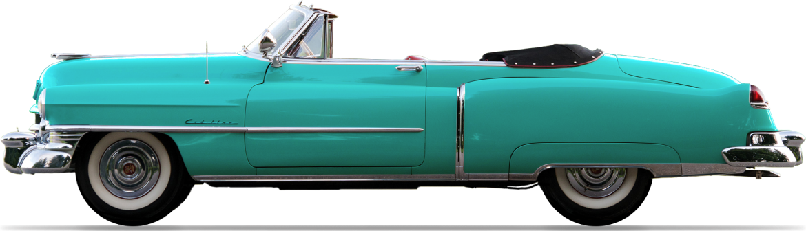

Почему тебе понравится отпуск на Кубе?
Куба всегда была привлекательна. Я люблю ее за уникальность, креативность и дух выживания. Я люблю Кубу потому, что несмотря на 60 лет неудач, она остается оптимистичным и открытым местом. Пройдите по улице с кубинским другом, и в одном квартале вы получите пять рукопожатий, четыре поцелуя, три приветствия «Диме Хермано!» И по крайней мере два приглашения в чей-то дом.
Read More ››-
1,920Trips
-
271Venues
-
3,321Tickets Sold
-
2,912Reviews
Куба - это...
Куба похожа на принца в плаще бедняка; за иногда ветхими фасадами задерживается золотая пыль. Именно эти богатые дихотомии делают путешествие здесь захватывающим. В этой стране, застрявшей во временном перекосе и шокирующей экономическим эмбарго, которое длилось более полувека, вы можете распрощаться с повседневными предположениями и ожидать неожиданностей.
Историческое наследие
Без современных вмешательств колониальные города Кубы не сильно изменились с тех пор, как мушкетные пираты преследовали Карибский бассейн. Атмосфера и архитектура особенно волнуют Гавану, Тринидад и Камагуэй, где грандиозные площади и мощеные улицы рассказывают сказки о богатстве и интригах.

Удивительные пляжи
Неважно, останавливаетесь ли вы в роскошном отеле в Гаване или изучаете сельское очарование Виньялес. Не пропустите пляжный курортный город Варадеро, этот пляжный рай по-прежнему следует рассматривать как часть ваших кубинских планов путешествий.
Кубинский Кадиллак
Американское торговое эмбарго с Кубой в 1960 году привело к немедленному отделению тысяч автомобилей 1940-х и 1950-х годов, построенных в Детройте от их запасных частей. Кабриолеты всегда были популярны благодаря круглогодичной тропической погоде. Не упустите место для фотосессии в Гаване. Площадь вокруг Капитолия - лестная копия здания Капитолия в Вашингтоне, в дневное время украшены 50-летними американскими автомобилями.
Куба в фото
Когда вы думаете о Карибском море, вы, вероятно, думаете о Кубе. Это одинокая акация, вырисовывающаяся на фоне горизонта, уходящего в вечность. Это снежная гора почти на экваторе и в пределах видимости суровых пустынь. Это пышная, покрытая пальмами береговая линия океана, это Великая рифтовая долина, которая когда-то угрожала разорвать континент на части, и это густые леса, напоминающие сердце континента.